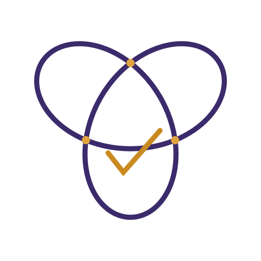

结是主体，勾是结果。
用真正的三叶结代替卷曲的线。三处上下穿插，让「结」在 64px 仍然成立；琥珀色对勾收在结心，表示解开。
同一套结与勾，换成深紫 + 琥珀，不依赖深色底。收进侧栏后不抢导航，也能认出是 Tokeru。

三叶结是最简单的非平凡结。三个交叉点，每一段都从另一段上方穿过、下方穿回。
结占画面约 70%，勾只是收尾。先看到结，再看到勾。
不是一条卷起来的线，而是三段绳子互相压住；64px 仍能读出编织关系。
16px 去掉内部缺口，保留实心结和加粗勾；不把大图的细节硬缩到最小。